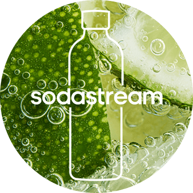

harmonia formy
i funkcjonalności
Stylowy, elegancki i minimalistyczny – właśnie taki jest czarny saturator Sodastream Ensō, który łączy niebanalny design z funkcjonalnością. Ustaw go na blacie kuchennym i każdego dnia gazuj wodę w mistrzowskim stylu.

stylowy akcent do Twojego wnętrza
Prosta forma i elegancka matowa czerń sprawiają, że saturator Sodastream Ensō
idealnie współgra z każdym wnętrzem: klasycznym, nowoczesnym i loftowym.
To elegancki akcent, który pokochasz.
styl
w każdej
kuchni
japońskie wzornictwo w Twoim domu
Sodastream Ensō na nowo definiuje styl: to harmonia wyrafinowanej formy i funkcjonalności zaprojektowana przez cenionego, japońskiego projektanta Naoto Fukasawę. To sztuka użytkowa, z którą podkreślisz piękno codziennego życia.
stylowy design z charakterem
Zanurz się w świecie Sodastream Ensō, w którym harmonijna estetyka idzie w parze z nowoczesnymi funkcjonalnościami. Sprawdź, jak łatwo obsłużysz saturator.
system montażu snap & lock
prosty montaż na „klik”. Jeden ruch wystarczy, aby zamontować i wyjąć butelkę. Prosto i szybko!
cylinder quick connect
błyskawiczna instalacja cylindra CO₂ bez wkręcania. Intuicyjny montaż dla komfortowego użytkowania!
stal nierdzewna
trwałość na lata dzięki elementom wykonanym z trwałej stali nierdzewnej. Niezawodność i łatwość czyszczenia!
elegancki zestaw: saturator + butelka
Do modelu Sodastream Ensō zaprojektowano stylową butelkę z elementami ze stali nierdzewnej, które dodają jej charakteru. Została wykonana z Tritanu, jest odporna na wysokie temperatury i matowienie. Dzięki temu wygląda świetnie każdego dnia i może być też myta w zmywarce. Dla jeszcze lepszej higieny, możesz zdemontować podstawę i umyć ją osobno.
-
możliwość mycia w zmywarce
-
optymalna pojemność 1 l
-
kompatybilność z Sodastream ENSŌ, MIX, ART i TERRA
-
trwały tritan bez BPA
-
detale ze stali nierdzewnej
-
demontowalna podstawa
możliwość mycia w zmywarce
optymalna pojemność 1 l
kompatybilność z Sodastream ENSŌ, MIX, ART i TERRA
trwały tritan bez BPA
detale ze stali nierdzewnej
demontowalna podstawa
bądź częścią bąbelkowej rewolucji
Zastąp stare przyzwyczajenia nowymi nawykami i wspieraj środowisko! Sodastream Ensō pomoże Ci zamienić jednorazowe butelki na ich wielorazowe odpowiedniki. To mała zmiana, z którą zrobisz krok w stronę świadomego stylu życia.
Dodatkowo z Sodastream oszczędzasz czas i energię, dbając jednocześnie o planetę – ulubione napoje gazowane masz zawsze pod ręką, bez zakupów, wychodzenia z domu i dźwigania zgrzewek.
otwórz się na smakowe eksperymenty
Czarny saturator Sodastream Ensō to eleganckie urządzenie, z którym w kilka chwil wykreujesz autorskie kompozycje smakowe. Wystarczy nagazować wodę, a później eksperymentować ze smakami syropów i dodatkami. To prostsze, niż myślisz.
gazuj
Wlej zimną wodę do butelki i zacznij gazować, dopasowując stopień bąbelków do swoich preferencji.
miksuj
Jeśli chcesz, dołóż takie dodatki jak syrop smakowy, świeże zioła czy owoce.

smakuj
Zakochaj się w smaku, który zapewni Ci orzeźwienie.
wybieraj smaki i delektuj się każdą chwilą

smakowe legendy
Czekają na Ciebie takie syropy jak Pepsi, 7 UP, Lipton Ice Tea Green i Mirinda, z którymi stworzysz własne wersje ulubionych napojów.

ponadczasowa klasyka
Dzięki lubianym klasykom, takim jak Cola, Tonic, Cytryna Limonka i Xtreme Energy, stworzysz klasyczne napoje gazowane na co dzień i wyjątkowe okazje.

owocowe orzeźwienie
Masz do wyboru syropy bez dodatku cukru, takie jak Malina, Pomarańcza Mango, Marakuja, Owoce Leśne, z którymi wykreujesz orzeźwiające lemoniady.